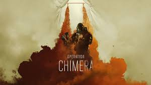
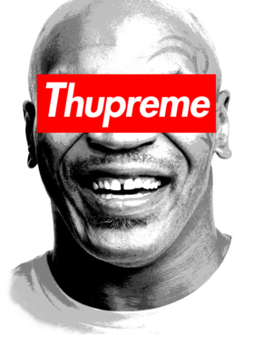

Jason Metzner.
Coder : Game Designer : Musician
RB6 Cheat
This website is dedicated to showing you the best possible biulds and operators to used for Attack and Defence.
Chimeras Cheat is something I developed by having a passion for working with HTML and building websites. I ran into many complications such as not being able to get the buttons to function properly. Click the image to go to the website.
Twitter Bot
The Twitter Bot combines random names of knots and firearms into a sentence that is made for comedy. Its not meant to be anything serious or important, but just to demonstrate how to make a Bot.
Some of the major Issues with the bot its self was that I couldnt get the deploy function to deploy normally.
Twitter Bot
The Lisp Cheat Sheet was designed to give you an intro into Lisp.
The most major problem with lisp is that the language is very old but has set the base for multiple languages used today.